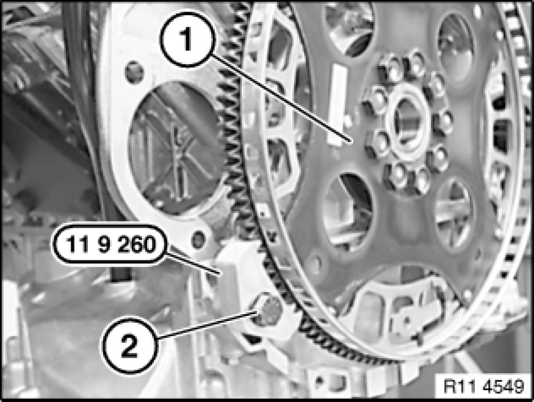

Flex Plate: Service and Repair
11 22 500 - Removing and installing/replacing flywheel (N52K)

Special tools required:
- 11 4 180
- 11 9 260
- 11 9 265

Important!
Aluminium-magnesium materials.
No steel screws/bolts may be used due to the threat of electrochemical corrosion.
A magnesium crankcase requires aluminium screws/bolts exclusively.
Aluminium screws/bolts must be replaced each time they are released.
Aluminium screws/bolts are permitted with and without
color coding (blue).
For reliable identification:
Aluminium screws/bolts are not magnetic.
Jointing torque and angle of rotation must be observed without fail (risk of damage).

Necessary preliminary tasks:
- Remove transmission
- Remove clutch Service and Repair

For vehicles with optional extra SA205 (automatic transmission):
Secure flywheel (1) with existing transmission bolt (2) and special tool 11 9 260.
Installation Note:
Replace aluminium screws.
Unfasten flywheel screws.
Tightening torque 11 22 1AZ 11 22 Flywheel.
Installation Note:
Flywheel (1) is secured with an alignment pin.
Fit new flywheel screws.
Clean all threads for flywheel screws in crankshaft.
For vehicles without optional extra SA205 (automatic transmission):
Secure flywheel with existing transmission bolt (1) and special tools 11 9 260 and 11 9 265.
Installation Note:
Replace aluminium screws.
Release flywheel screws with special tool 11 4 180.
Tightening torque 11 22 2AZ 11 22 Flywheel.
Installation Note:
Flywheel is secured with a dowel pin.
Fit new flywheel screws.
Clean all threads for flywheel screws in crankshaft.

Assemble engine.